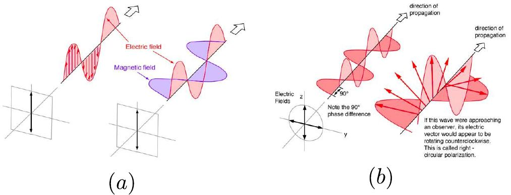
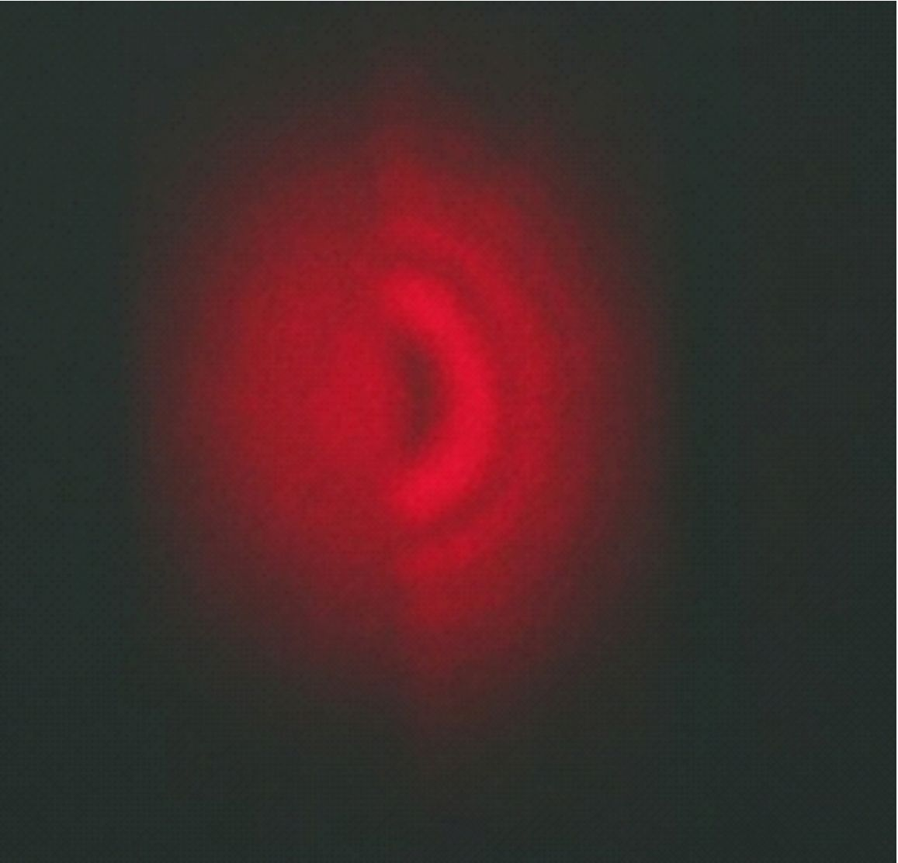
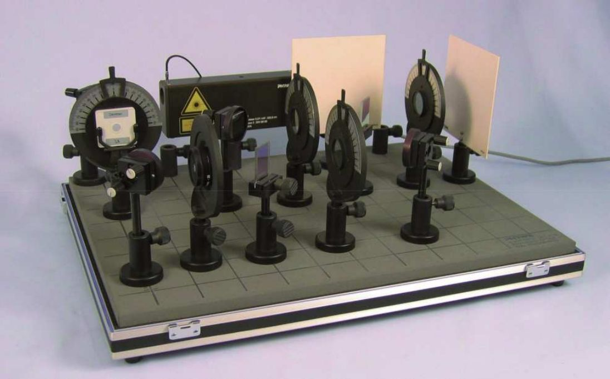
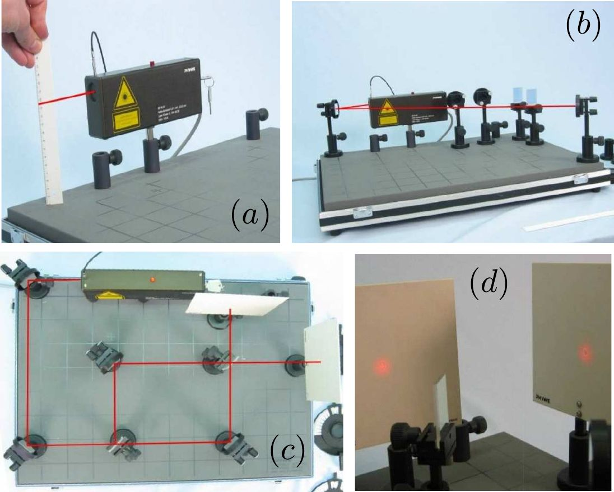
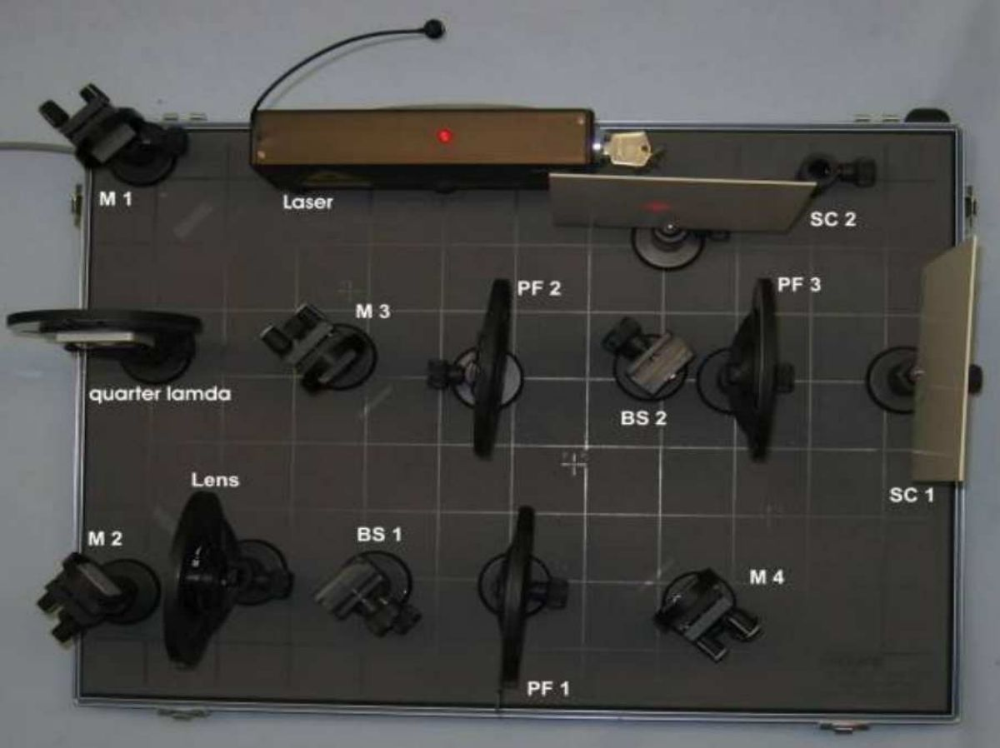

La demostración por parte de Albert Einstein de la cuantización del campo electromagnético en partículas denominadas fotones, mediante su explicación del efecto fotoeléctrico en 1905, plantea la cuestión de si los estados de polarización de una onda electromagnética obedecen también los principios de la mecánica cuántica.
Explotando la cuantización del espín de los fotones, en esta práctica se estudiarán los patrones interferenciales de un haz de luz laser no colimado y separado en dos haces que se superponen en un interferómetro de Mach-Zender. Se comprobará que, al interponer dos polarizadores en el camino de los rayos con planos de polarización orientados perpendicularmente entre sí, el patrón de interferencias se destruye. Si, posteriormente, interponemos antes de la pantalla de observación un tercer polarizador orientado a cuarenta y cinco grados respecto de los dos anteriores, el patrón de interferencias reaparece.
El presente experimento ilustra, por lo tanto, el caracter dual del campo electromagnético, que puede ser entendido como onda clásica y también como como partícula cuántica.
La interferencia de ondas electromagnéticas planas consiste en la formación de un patrón de regiones de claridad y oscuridad en el espacio como resultado de la superposición de dos o más ondas procedentes de distintas fuentes de luz. En el caso de dos fuentes monocromáticas de idéntica frecuencia, si asumimos que las dos ondas son emitidas en fase, aquellas regiones del espacio que se hallen a una distancia respecto de cada fuente tal que la diferencia de las mismas sea un número entero de longitudes de onda, resultan ser las más brillantes, por coincidir los máximos de las distintas ondas. Por el contrario, aquellas zonas en las que la diferencia sea un número semientero de longitudes de onda, dará lugar a una interferencia destructiva.

Figura 8.1: Onda planas transversales electromagnéticas, con la dirección de vibración perpenficular a la de propagación. (a) Polarización lineal a lo largo del eje . (b) Polarización circular en la que el campo va cambiando su orientación dando vueltas en el sentido contrario a las agujas del reloj.
Además, las ondas electromagneticas, al estar asociadas a campos vectoriales, poseen una propiedad denominada polarización, la cual describe la orentación del eje de vibración de la onda, entre los muchos posibles planos perpendiculares al plano de propagación. Si nos centramos por simplicidad en la componente de campo eléctrico del campo electromagnético y consideramos el eje como dirección de propagación de la onda, la polarización describe cómo cambian en el tiempo las componentes e del campo elétrico. Dicho de otro modo, un estado de polarización de una onda electromagnética es la curva trazada en un plano fijo en el espacio por el vector eléctrico cuando una onda plana lo atraviesa (ver Fig. ??).
Un hecho crucial para la presente práctica es que las ondas electromagnéticas de polarizaciones ortogonales no interfieren entre sí. El láser de este experimento produce radiación electromagnética monocromática coherente, es decir, ondas electromagnéticas con una única frecuencia, polarización y fase. El haz se divide en dos mediante un divisor de haz, consistente en un dieléctrico con una de sus dos caras espejadas, de tal manera que la luz tiene un de probabilidad de reflejarse o de transmitirse. Es posible cambiar la polarización de cada haz por separado ajustando dos polarizadores, respectivamente. Si fijamos la polarización para que ambos haces sean iguales (lo que es equivalente a eliminar los polarizadores de las trayectorias de los haces) observaremos el patrón de interferencia en las pantallas.
Las franjas brillantes serán los lugares en los cuales los haces interfieren constructivamente, produciendo una mayor amplitud que en ausencia del fenómeno interferencial, mientras que las franjas oscuras son los lugares donde tiene lugar la interferencia destructiva y la radiación de ambos haces se anulan entre sí. Es posible cambiar la polarización de los polarizadores para que sean perpendiculares entre sí, con la consecuente desaparición del patrón interferencia. Finalmente, podemos usar el tercer polarizador a la salida antes de la pantalla, para recuperar las franjas de interferencia, fijándolo a un ángulo de 45º con respecto a los polarizadores anteriores. Al hacerlo, volvemos a traer los dos haces a una misma polarización, interfiriendo entre ellos.
El patrón resultante en la pantalla es el célebre disco de Airy, y aparece como consecuencia de la difracción producida en el segundo divisor de haz. Es posible relacionar la apertura angular de los discos de Airy con la longitud de onda del laser , según la ecuación
donde , siendo el ángulo subtendido por el triángulo que forman el centro del disco de Airy en la pantalla, un punto del disco de orden y el punto de centro del divisor del haz. La variable reprenta el diámetro de sistema óptico, que en el presente caso dependerá de la lente de expansión utilizada. Finalmente, la sucesión son los máximos de la función de Bessel, en conformidad con la aproximación de Fraunhoffer para el estudio de la difracción.
El experimento puede ser perfectamente interpretado por la teoría cuántica. Para ello consideramos que la radiación del campo electromagnético consiste en partículas discretas o fotones. Esto no significa que podamos pensar en los fotones como rígidos, sin embargo. En realidad, en términos matemáticos, un estado de un sistema (un fotón, por ejemplo) en mecánica cuántica se describe mediante una función de onda compleja , perteneciente a un espacio de Hilbert. La evolución de dicha función se rige por la ecuación de Schrödinger
donde el operador cuántico asociado a la energía total de la partícula. De acuerdo con la interpretación más aceptada de la teoría cuántica, la función de onda es un objeto matemático bastante abstracto que no representa una realidad física observable, es decir, una cantidad que realmente podemos medir de forma directa. Este campo escalar complejo nos informa de la probabilidad de que un observable tome un valor dado al medir una magnitud, donde la función densidad de probabilidad se contruye tomando el módulo de esta función al cuadrado. Por lo tanto, podemos calcular la probabilidad de encontrar una partícula en una posición dada en el espacio, o de que tenga una velocidad o energía dadas, un momento angular, etc.
Así pues, si bien hablamos por comodidad de partículas, hemos de tener en cuenta que la teoría cuántica las describe como paquetes de ondas, y lo que en realidad tenemos son “nubes" de probabilidad. Por ejemplo, si queremos calcular la posición de un electrón, el resultado será una región en el espacio donde la probabilidad no es cero, y no una sola ubicación, como en la física clásica. Lo que esto significa es que, desde el punto de vista cuántico, la partícula está presente en cualquier región en la cual la probabilidad calculada sea distinta de cero. Finalmente, la fase de la función de onda codifica información relativa a la interferencia entre estados cuánticos. Esto da lugar al comportamiento ondulatorio de los estados cuánticos, que obedecen el principio de superposición.
En nuestro caso particular, por ejemplo, si hay dos polarizaciones lineales independientes para la vibración de un fotón, y ambos son igualmente probables (no podemos medir qué camino toma realmente el fotón), ambos estados cuánticos interactuarán entre sí dando como resultado el patrón de franjas que observamos. En particular, si llamamos a la función de onda asociada a un fotón con estado de polarización vertical , y a un fotón con polarización horizontal , el resultado de superponer ambos estados con igual probabilidad será
donde se han definido las funciones de onda espinoriales y , con y se ha utilizado la notación braket para describir los estados de espín (o de polarización, que es lo mismo) del fotón, como vectores en un espacio de Hilbert. La diferencia de fase entre ambas ramas depende del arreglo experimental, y es la responsable de la interferencia.
Nótese como al calcular la densidad de probabilidad en el caso anterior de la Ec. 8.3, obtenemos que , y por lo tanto no hay patrón inteferencia, lo cual esta en correspondencia con el caso en que disponemos los dos polarizadores ortogonalmente. Sin embargo, si usamos la misma polarización para las dos componentes, entonces se obtiene que , pudiendo observarse un patrón interferencial en ambas pantallas.

Figura 8.2: Resultado con uno de los dos lados medio bloqueado, mostrando la diferencia entre un patrón interferencial y mancha original.
En el primer caso, el resultado de la interferencia de estas dos funciones de onda, que son ortogonales, es nulo. Podemos interpretar nuestro experimento utilizando los postulados de la mecánica cuántica. Aunque el láser produce muchos fotones que viajan a través del haz simultáneamente, el hecho verdaderamente sorprendente es que el resultado es el mismo (se forma un patrón de interferencia o no) incluso cuando enviamos los fotones de uno en uno. Desde el punto de vista mecánico cuántico, el fotón tiene probabilidad distinta de cero de viajar a lo largo de ambos caminos de nuestro montaje del borrador. Esto nos lleva a concluir que el fotón viaja simultáneamente a lo largo de ambos caminos e interfiere consigo mismo. Ambos estados coexisten y tienen las mismas probabilidades, y la función de onda es una superposición de esos estados, lo que da como resultado el patrón de interferencia.
Cuando usamos filtros de polarizaciones ortogonales (polarizaciones opuestas para cada camino), la función de onda colapsa a la polarización dada por el aparato de medida en cada rama (y por lo tanto las probabilidades de encontrar el fotón a lo largo de los dos trayectorias), eliminando la capacidad del fotón de interferir consigo mismo. Esto significa que, al polarizar el fotón, podemos decir por qué camino viajó (la probabilidad se convierte en uno para un camino y cero por el otro) y, por lo tanto, sólo existe un estado, desapareciendo así el patrón interferencial. Cuando borramos la información de polarización con el tercer polarizador, la probabilidad de encontrar un fotón en un localización en el detector (pantalla) resulta nuevamente de una superposición de los dos estados cuánticos igualmente probables y, por lo tanto, forma el patrón de interferencia. De ahí el nombre de “borrador cuántico", pues permite borrar los efectos producidos por los polarizadores encontrados por la luz anteriormente en su camino.
En este experimento hemos de montar un interferómetro de Mach-Zehnder (ver Fig. 3). El interferómetro de Zehnder es utilizado para dividir un haz de luz en dos partes, enviarlos a lo largo de dos caminos diferentes donde pueden ser sujetos a tratamiento individual y luego recombinados de nuevo para observar los efectos de la interferencia de dichos haces. Dado que la alineación precisa del interferómetro es crucial, debemos realizar los pasos individuales que serán descritos punto por punto a continuación e ilustrados en la Fig. 4.

Figura 8.3: Montaje experimental.
El montaje real que hemos de realizar puede verse en la Fig. 8.4. Para ello seguiremos los ocho pasos siguientes.

Figura 8.4: Procedimiento para disponer y alinear correctamente el sistema óptico.
La primera parte de la prática es estrictamente cualitativa. Se pide a los alumnos estudiar en detalle los efectos de introducir los polarizadores , y .
En segundo lugar calcularemos la apertura del sistema óptico midiendo el patrón de interferencia del disco de Airy. Escogeremos las distancias respecto del divisor de haz a la que se colocarán las pantallas. Se medirán con un cinta métrica y se anotarán.
Utilizando una de las dos pantallas, registraremos los valores de las distancias del centro del patrón a los máximos de los anillos para los tres primeros ordenes de difracción. Calcularemos las aperturas angulares correspondientes usando los ángulos calculados en la etapa anterior. Este proceso debe repetirse para cuatro distancias (o ) de la pantalla al divisor de haz.
Para cada orden de difracción, se representará gráficamente la apertura angular frente a la distancia de la pantalla . Ajustaremos por mínimos cuadrados las tres rectas y calcularemos la pendiente, la ordenada en el origen y el coeficiente de regresión. Utilizando la Ec. 8.2 se obtendrá el tamaño del sistema óptico a patir del valor de la pendiente para los distintos órdenes de difracción y se realizará un promedio de ambos con su correspondiente error.

Figura 8.5: Plano cenital del montaje final con todos los elementos etiquetados.